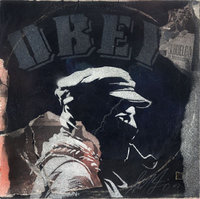
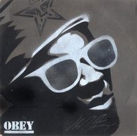
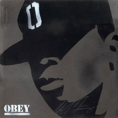

Jungle LP Show
From The Giant: The Definitive Obey Giant Site
The JUNGLE LP SHOW was a multiple artist exploration of the theme "music X art" that ran from Friday, July 11, 2003 to Wednesday, July 23, 2003 at the Rocket Gallery in Japan.
From the Rocket Gallery website:
In December 2002, SK8 ON THE WALL, a show that the sixty-seven artists from Tokyo and the United States had chosen a skateboard as a canvas to produce their artwork, was held and the total of 145 amazing skateboards were exhibited. This show achieved such a great success. We even sold a number of skateboards on the opening night and during the exhibition period. It was featured in various media. As a result of all these, the entire show was transferred to Parco Gallery in Nagoya for the exhibition. Now this time, we shift the canvas from a skateboard to a record cover and organize a new exhibition, JUNGLE LP SHOW, with the theme "music × art" at gallery ROCKET.
The conditions that were provided to the participating artists this time are 1) to produce their original LP covers and 2) to add something to the LP covers that they already have (for example paint or draw over the covers). The choice of a theme was totally up to each artist. What kind of covers are they going to make from scratch? Whose album covers are they going to employ and how do they transform them into new artworks? It is obviously going to be an exhibition that you want to keep an eye on.
As we did when we have the "SK8 ON THE WALL," (almost) all the works will be on sale. Remember, the law of the "JUNGLE" is "first come, first served!!" Don't miss it!!
Statement of Taka Kawachi (curator of JUNGLE LP SHOW):
Although LPs are still in need among DJs, it has been overwhelmed by the CD industry and they have become an object that gives us some kind of nostalgic feelings. However, with regard to the size, LPs are visually more effective and, with regard to the texture and material, more artistic than CDs. Then, wouldn't it be fun to do a "LP art × Original LP" show? This is how I came up with the idea of "JUNGLE LP SHOW."
Asking artists to draw something directly on the existing LP covers is based on the idea of music sampling. By adding a new image on a well-known album cover, a completely new and different visual work will be produced.
In this exhibition, I've requested the artists to also produce their original LP covers as well. I didn't set any conditions for the material or the method that they could use, because asking them to present a LP cover art and an original LP cover will automatically reveal and require their unique artistic tastes and approaches.
Another interesting aspect that we should consider is the choice of LPs that the artists are going to make for adding their original art, design and illustration to create the one of a kind LP cover. Most of the participating artists are great music lovers so one of my biggest curiosities is which covers they are going to chose.
Needless to say, the participating artists have a considerable respect for the designers and photographers who had created the cover and of course for the cover design itself. Therefore, as you see their LP art, you can instantly tell that the purpose of this show is not to scribble or doodle on LP covers and to soil the original artwork. The works presented in this exhibition are an extension of sampling and plagiarizing-art, which is one of the techniques that many designers always employ.
"SK8" only included the artists from Tokyo and the U.S., but "JUNGLE LP SHOW" introduces the artists from Tokyo, the U.S., London, Paris, Amsterdam and Australia. Another difference from the former exhibition is that the number of Japanese artists and foreign artists are the same (25 + 25 = 50 artists). "THE JUNGLE LP SHOW" is going to be a jungle filled with a wide variety of LP covers with different styles and materials, and with a chaotic and energetic atmosphere just like the jungle!!
Some "Jungle LP Show" pieces:
|  |
{kind=link}
{kind=link}
|  |  |
{kind=link}
{kind=link}